Imaging Modalities in Medicine
Imaging Modalities Medicine Image
Conventional Radiography
Conventional Radiography Principles of Image Interpretation
- Structures are seen when outlined by tissues of different xray attenuation
Conventional Radiography Principles of Interpretation
-
5 basic radiographic densities:
- Air - little attenuation
- Fat - intermediate attenuation
- Soft tissue - intermediate attenuation
- Bone - high attenuation
- Metal/Contrast agents - high attenuation
Conventional Radiography Example
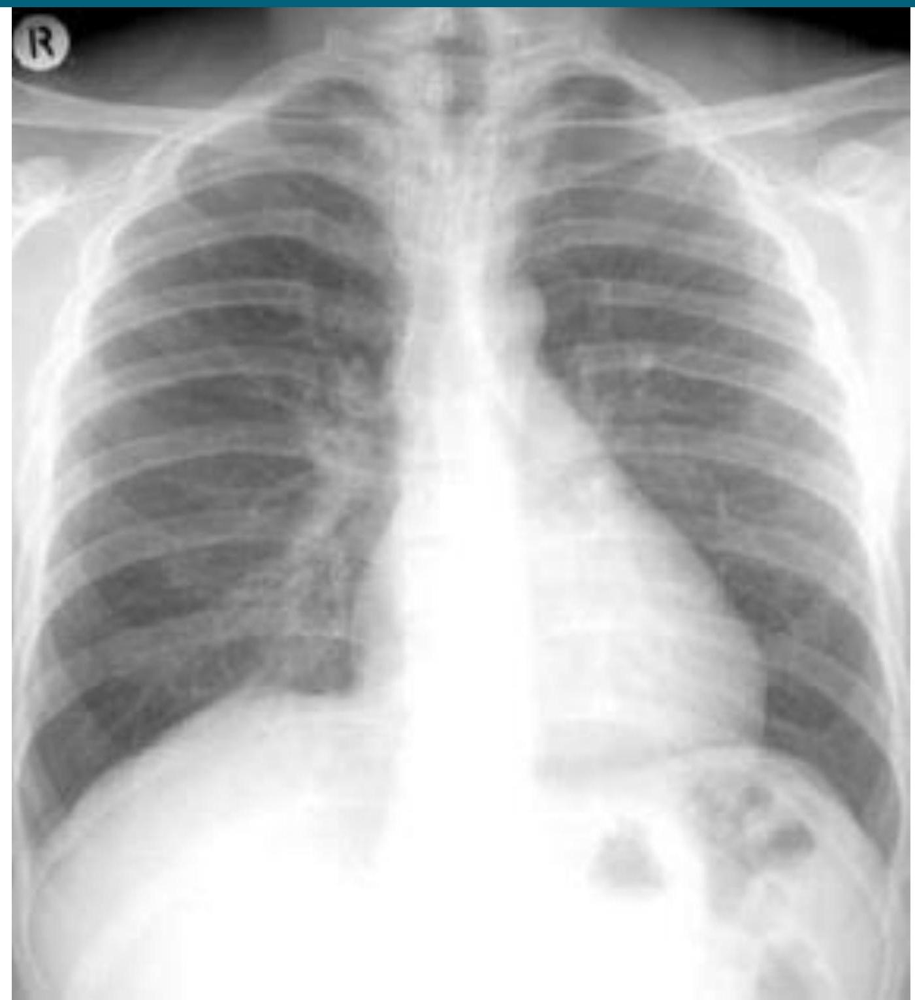CONVENTIONAL TOMOGRAPHY


FLUOROSCOPY


 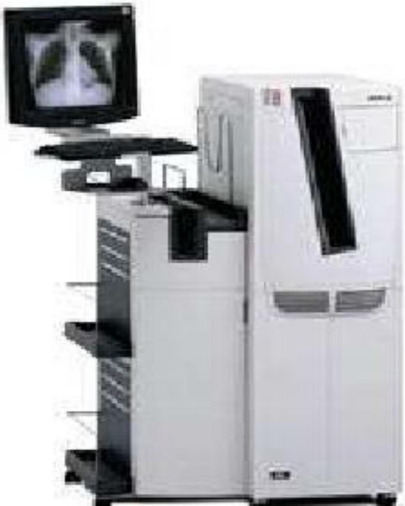
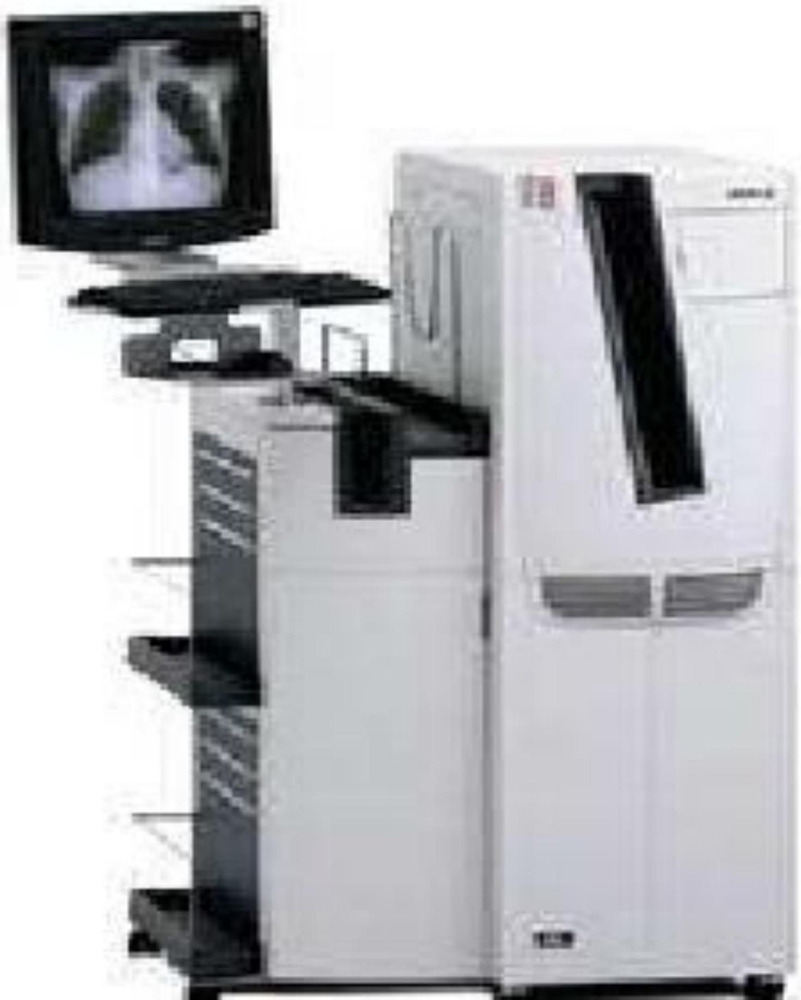
CROSS-SECTIONAL IMAGING
IMAGING PLANES
COMPUTED TOMOGRAPHY
- Computer reconstruction of cross section of body from measurements of x-ray transmission through thin slices of the patient
COMPUTED TOMOGRAPHY Types
- Conventional CT - Images obtained one slice at a time
- Helical/Spiral CT - Patient table moves while xray tube rotates around patient
- Multidetector helical CT - Multiple detectors allowing multiple slices per rotation of the xray tube
COMPUTED TOMOGRAPHY Contrast:
- Intravenous - Enhance density differences between lesions and surrounding parenchyma, demonstrate vascular anatomy, and characterize lesions by patterns of contrast enhancement
- Oral - Required to opacify the bowel to help differentiate between from tumors, lymph nodes, and hematomas
Triphasic CT
64 MDCT/MSCT
Multislice CT
Normal Coronary Artery CT Reconstruction
MAGNETIC RESONANCE IMAGING
- Based on the ability of protons in the body to absorb and emit radio wave energy when the body is placed in a strong magnetic field
- Multiple different pulse sequences used to emphasize different tissue characteristics
- Advantages: excellent soft tissue contrast resolution, provides images in any plane, absence of ionizing radiation
- Limitations: Inability to demonstrate dense bone detail or calcifications, long imaging times, limited spatial resolution compared with CT, expensive
ULTRASONOGRAPHY
- Ultrasound transducer converts electrical energy to a pulse of high frequency sound energy, which reflects off of tissues, producing echoes which are used to generate images.
- Real time imaging of moving patient tissue
- Doppler ultrasound permits detection of blood velocity and direction
- Highly operator dependent


 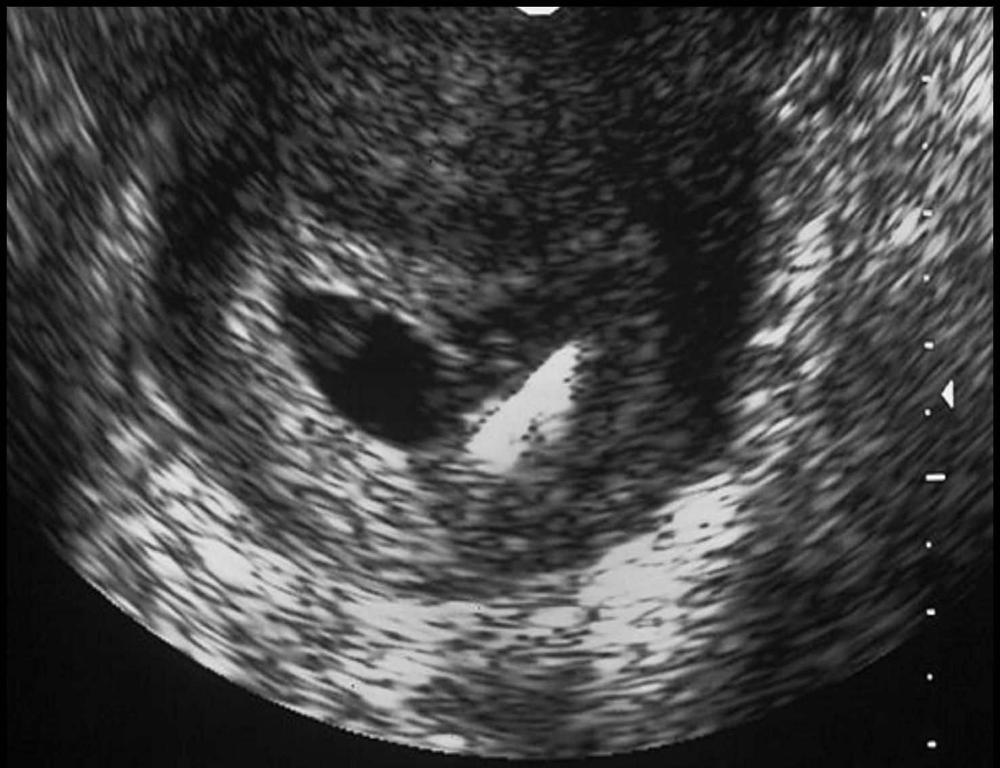
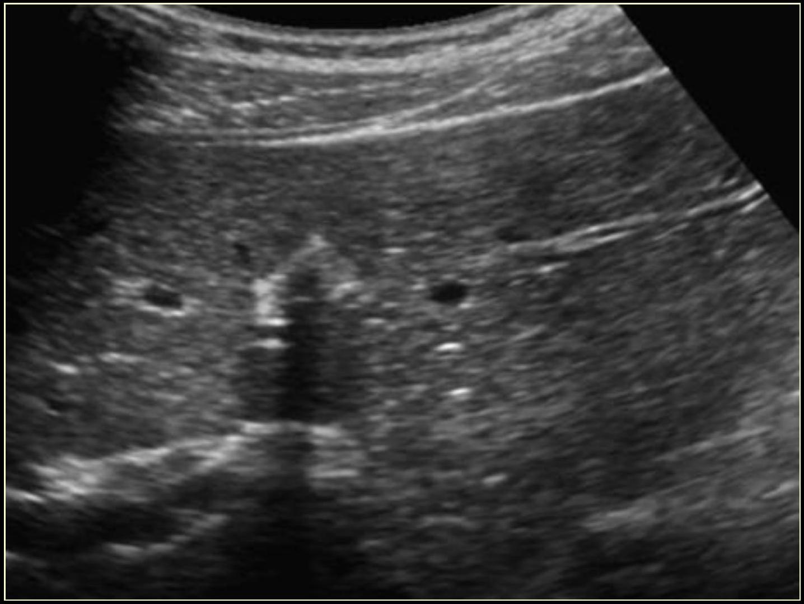
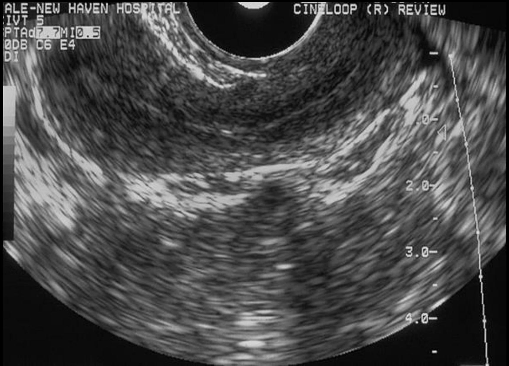
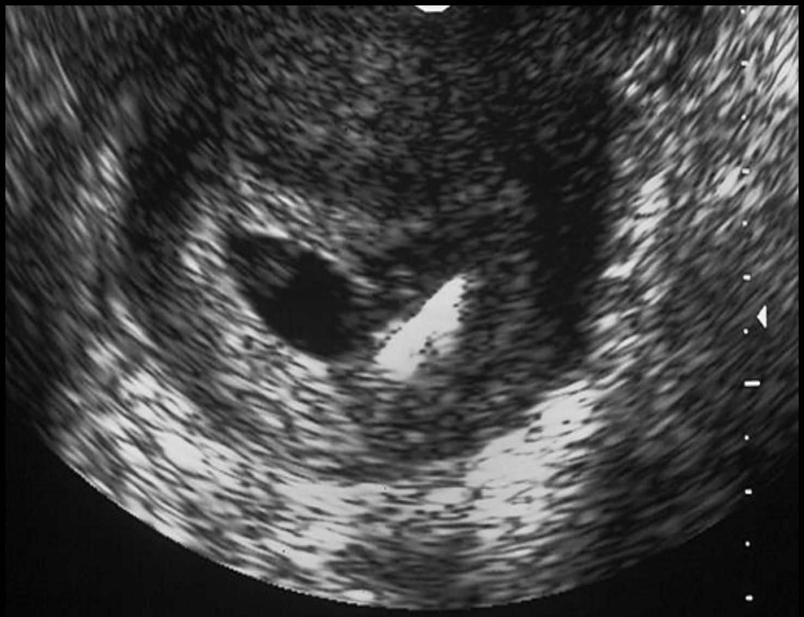
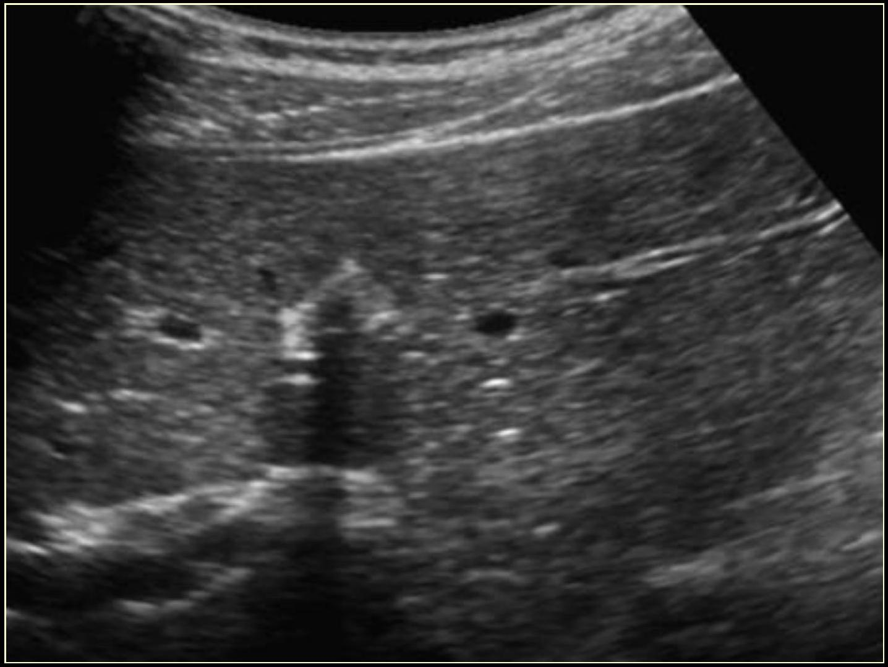
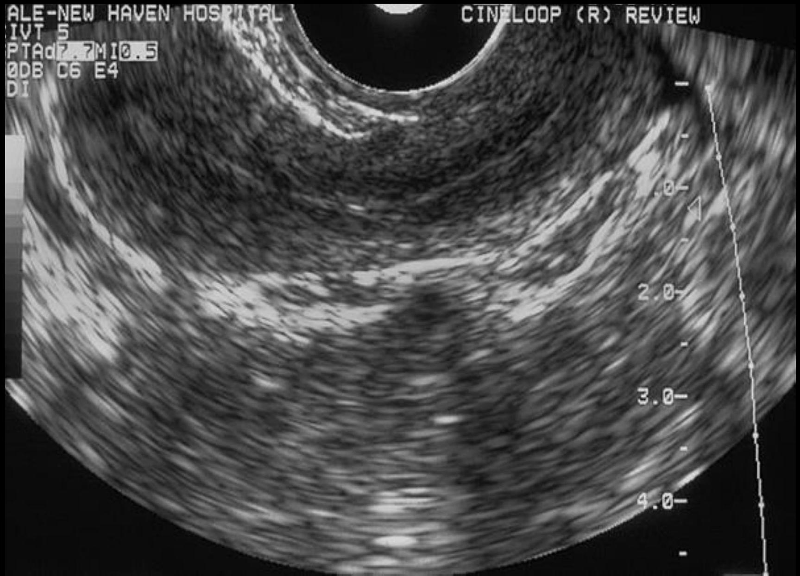
NUCLEAR MEDICINE
- External detection and mapping of the biodistribution of radiotracers that have been administered to a patient.
- Poor spatial resolution, but high functional resolution.
- Examples: Ventilation perfusion scan, bone scan, biliary scan, white blood cell scan, renal scan, thyroid scan, brain scan, PET, liver spleen scan
PET Physics
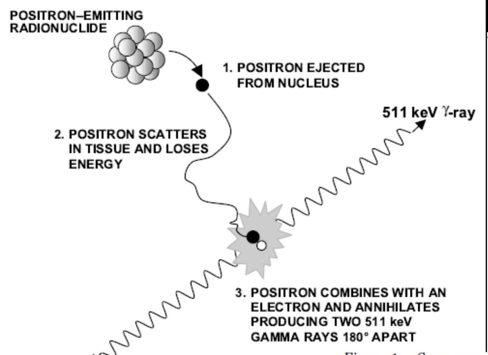Image Guided Surgery
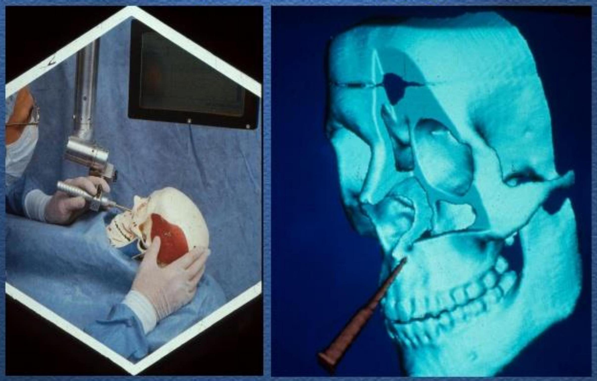MRI/Glioblastoma Image Guided Surgery
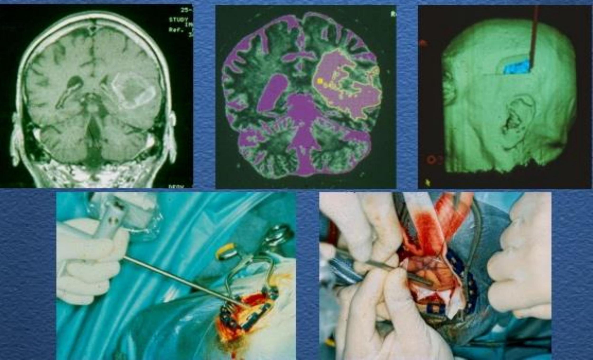 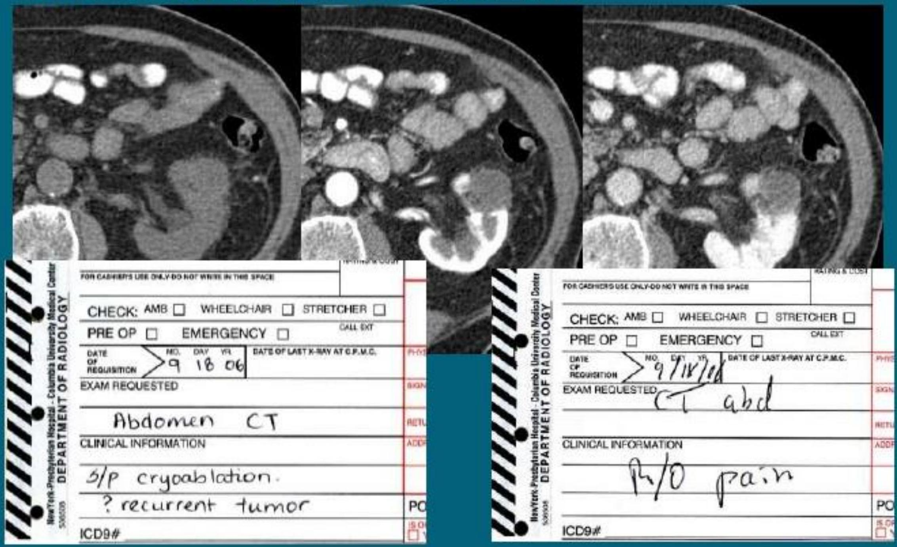ORDERING AN EXAM
NEUROLOGIC IMAGING: BRAIN SPECIFIC SITUATIONS
Acute Trauma: Noncontrast CT
Stroke: Noncontrast CT followed by MRI
Seizure: 1⁰ Seizure, contrast-enhanced MR or CT Postictal state or residual neurologic deficit, Noncontrast CT Chronic seizure disorder, detailed MRI
Infection and Cancer: contrast-enhanced MRI
Headache: Acute headache, noncontrast CT Chronic headache with no neurologic Sx, noncontrast MRI Chronic headache with neurologic Sx, contrast-enhanced MRI
Dementia: noncontrast MRI
NEUROLOGIC IMAGING: SPINE
Acute Trauma: Plain film, CT if plain film findings equivocal
Everything else: MRI
THORACIC IMAGING
Mainstay: Posteroanterior (PA) and lateral chest radiographs
Special views:
- Lateral decubitus: Small effusions or small pneumothorax
- Expiratory radiograph: Focal or diffuse air trapping
- Apical lordotic view: Visualization of lung apices
- Chest fluoroscopy: Diaphragmatic paralysis
LIVER
- Contrast-enhanced multidetector CT (MDCT): Primary imaging method
- MRI with contrast: Inability to give iodinated contrast or need for multiple repeat examinations
- US: Screening method for patients with abdominal symptoms and suspected diffuse or focal liver disease, assessment of hepatic vessels
PHARYNX AND ESOPHAGUS
Barium Swallow/Esophagram: Swallowing disorders and mucosal lesions
CT: Cancer staging, extent of disease
MR: Cancer staging, extent of disease, preferred for evaluation of nasopharynx
URETHRA
Retrograde urethrogram: Anterior male urethra
Voiding cystourethrogram: Anterior and posterior urethra
GENITAL TRACT
FEMALE GENITAL TRACT
US: Primary imaging modality; Transvaginal vs Transabdominal
CT/MRI: Staging and follow up of pelvic malignancies
Hysterosalpingography (HSG): Congenital anomalies and causes of infertility
GENITAL TRACT TESTES AND SCROTUM
Color US: Primary imaging method
CT/MRI: Tumor staging and locating undescended testes
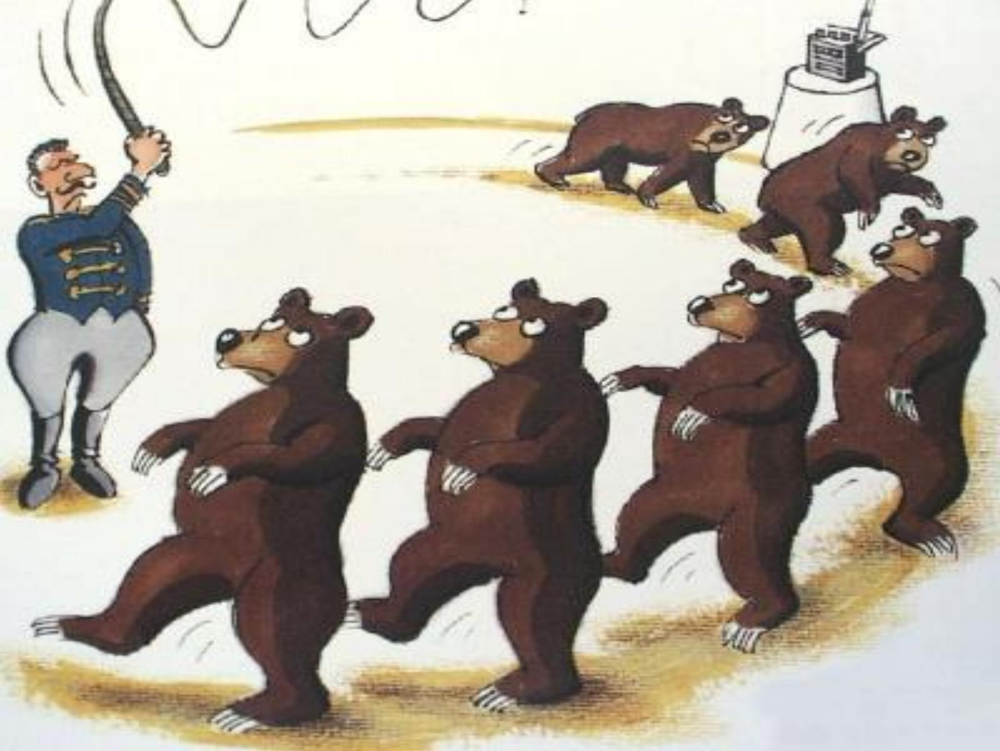